Read text aloud, turn a video's speech into subtitles, translate English ↔ 繁體中文,
and give the video a new voice. Everything runs on your own Windows laptop: no internet,
no uploads, no account.
1Transcribe
2Translate
3Review
4Voice
5Export
Version 1.1 · ETINSTW · 繁體中文版：《Kokoro Reader 使用入門》
0Contents
1 · Install
2 · Start and stop
3 · Read a text file aloud
4 · Dub a video: overview
5 · Step 1 Transcribe
6 · Step 2 Translate
7 · Step 3 Review
8 · The glossary
9 · Step 4 Voice
10 · Step 5 Export
11 · A video that already has subtitles
12 · How long things take
13 · Where files are kept
14 · Troubleshooting
15 · One-page checklist
What you can do
You have
Kokoro Reader gives you
Go to
A text file (.txt / .md)
The text read aloud with each word highlighted, saved as WAV or MP3
Section 3
A video, English or Chinese
Subtitles, a translation you review line by line, and the video with a new voice in the other language
Sections 4–10
A subtitle file (.srt) and its video
The same, starting from your subtitles
Section 11
Privacy: all speech recognition, translation and voices are built into the program.
Your videos and texts never leave your laptop.
1Install
You need: Windows 10 or 11 (64-bit), about 5 GB free disk space, 16 GB RAM recommended
(8 GB is fine for text and short videos). No administrator rights and no internet are needed.
Copy KokoroReader-Setup-1.1.1.exe (about 2.8 GB) to your laptop and double-click it.
If Windows shows “Windows protected your PC”, click More info → Run anyway.
The installer is not signed with a company certificate; do this only for the installer you received from ETINSTW.
Choose English or 繁體中文 for the installer, read the welcome page and click Next.
Optionally tick Create a desktop shortcut, then click Install. Installing takes about 5–6 minutes.
Leave Start Kokoro Reader now ticked and click Finish.
Everything is included in the one installer: the program, Python, the English and Chinese voices,
the speech-recognition models, the translation models and FFmpeg for video. Nothing is downloaded later.
The Start menu gets three entries: Kokoro Reader, Kokoro Reader – Getting Started (this manual) and Kokoro Reader – 使用入門 (the 繁體中文 manual).
2Start and stop
Open Kokoro Reader from the Start menu. It opens in your web browser at 127.0.0.1,
which is your own laptop, not a website.
EN / 繁中 at the top right switches the language of the screens.
Getting started opens a short version of this manual inside the app.
When you finish, click Quit. If you only close the browser tab, the app stops by itself
about 5 minutes later, but never while it is still working.
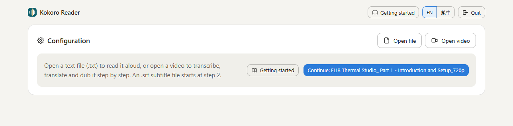
The start screen. “Continue: …” brings back the last video you worked on.
Your work is saved as you go. After closing the app, open it again and click
Continue: <video name> to carry on where you stopped.
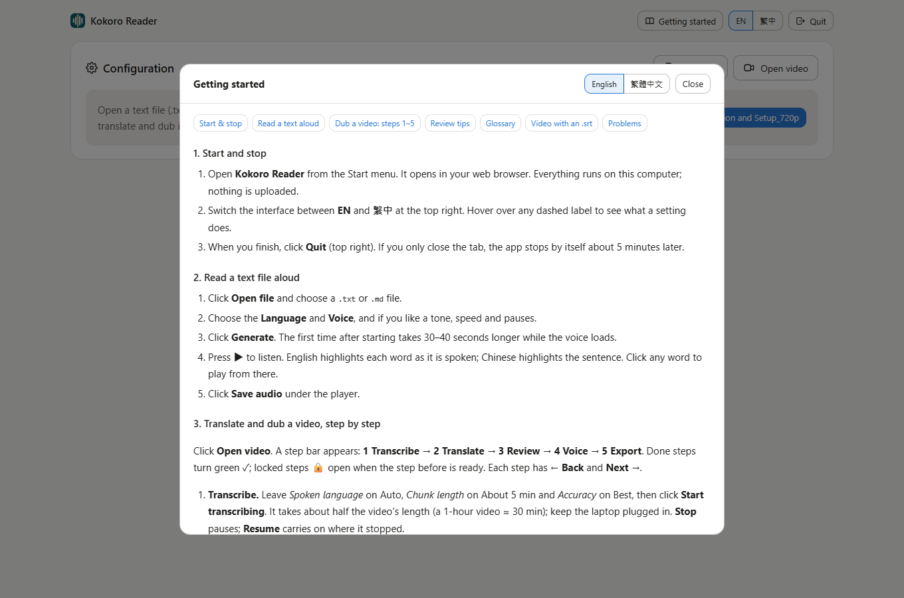
Getting started inside the app: the same steps in short form, in English or 繁體中文.
3Read a text file aloud
Click Open file and choose a .txt or .md file.
Choose the Language and Voice. Defaults: af_bella for English, zm_009 for Chinese.
Optionally set the tone, speed and pause between sentences.
Hover over any label with a dashed underline for an explanation.
Click Generate. The first time after starting the app it takes 30–40 seconds longer while the voice loads.
Press ▶ to listen. Click any word to jump there. Save the audio as WAV or MP3 from the list of files under the player.
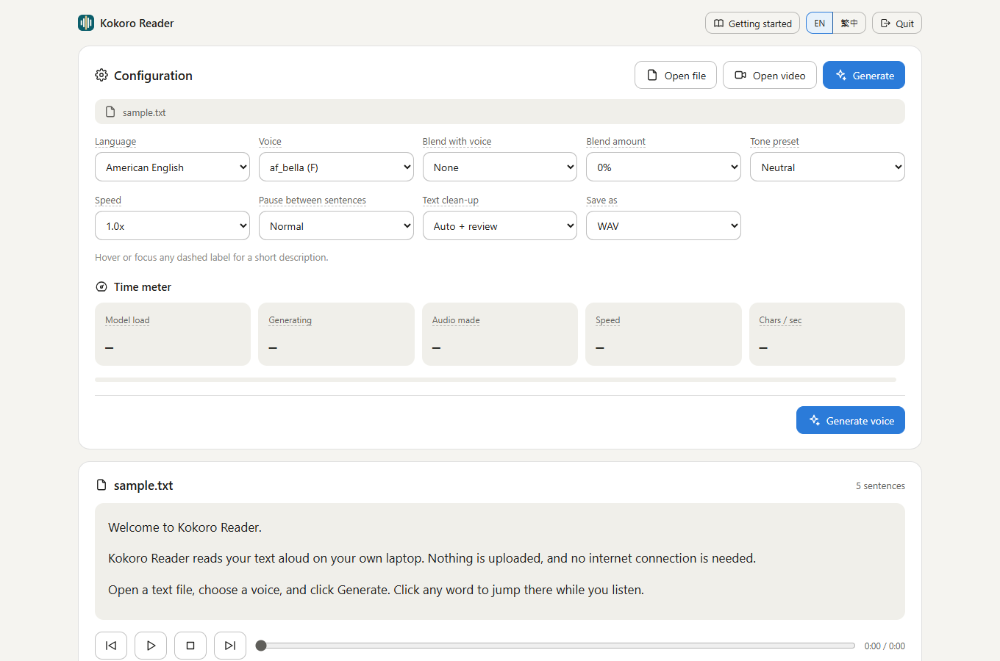
Text mode: settings at the top, the text below, highlighted while it is read.
4Dub a video: overview
Click Open video and choose the video (MP4, MOV, MKV and most other formats).
A bar of five steps appears and guides you from left to right:
1Transcribe speech → subtitles
2Translate EN ↔ 繁中
3Review check & fix
4Voice new voice track
5Export save files
The step you are on is blue. Finished steps turn green ✓.
Locked steps 🔒 open by themselves as soon as the step before is ready.
Each step shows a blue instruction line explaining what to do, and Back / Next buttons at the bottom.
Long videos are cut into chunks of about 5 minutes at natural pauses. You can review chunk 1
while the later chunks are still being transcribed.
The lower card has two tabs: Review (the table of lines) and Play & highlight (watch the result).
Keep the laptop plugged in and awake while it works. Long videos take a while (see section 12).
Stop and Resume continue exactly where they left off, even after closing the app.
5Step 1 · Transcribe
Turns the speech in the video into time-coded subtitle lines.
Setting
Recommended
Why
Spoken language
Auto
Detects English or Chinese by itself. Choose it yourself only if Auto guesses wrong.
Chunk length
About 5 min
Lets you start reviewing early. “Whole video” is fine for clips under 10 minutes.
Accuracy
Best
“Fast” is about twice as quick but makes more mistakes; use it for rough drafts.
Check the settings and click Start transcribing.
Watch the progress bar. As soon as the first chunk is done, step 2 opens; you don't have to wait for the rest.
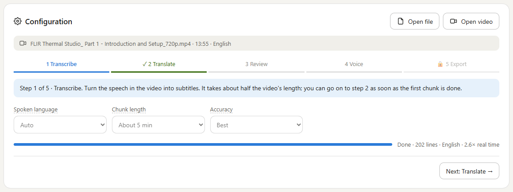
Step 1 when finished: 202 lines from a 14-minute video, 2.6× faster than real time.
6Step 2 · Translate
Each chunk is translated as soon as it is transcribed.
Translate to = Automatic: English videos become 繁體中文 (Taiwan wording); Chinese videos become English.
Choose Off — same language if you only want to re-voice the video in its own language, for example to replace a poor recording.
Translate again redoes the translation, for example after you add many glossary terms.
Lines you already edited by hand are kept.
The translation works sentence by sentence, then spreads each sentence back over its subtitle lines,
so the meaning stays whole even when a sentence is split over several lines.
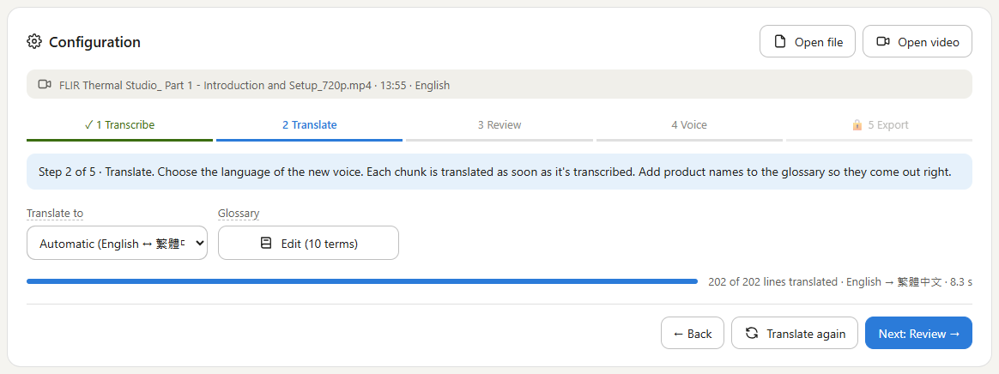
Step 2: choose the direction; the progress shows how many chunks are translated.
7Step 3 · Review
This is where you make the translation right. The machine translation is literal; plan to fix some lines.
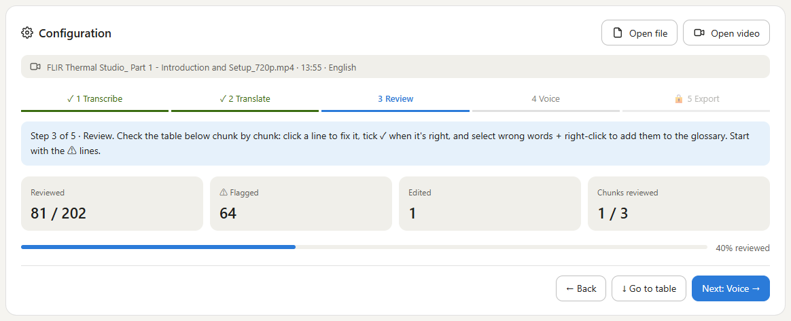
Step 3: the counters show how much is reviewed, flagged and edited.
The review table
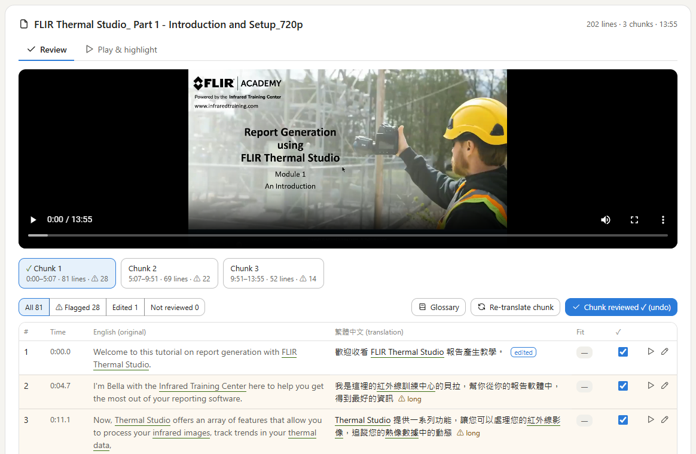
The Review tab: video, chunk buttons, filters, and the original and translation side by side.
Pick a chunk with the chunk buttons (for example Chunk 1 · 0:00–5:07).
Click ⚠ Flagged to see the lines most likely to need work first.
Click a translation to edit it. Enter saves, Esc cancels.
While editing you can also click Re-translate or Undo edit (back to the machine translation).
▶ plays that line in the video so you can hear what was really said. ✎ edits the original text.
Tick ✓ for each line that is right, or click Mark chunk reviewed when the whole chunk is done.
Repeat for each chunk. Not reviewed shows what is left.
What the ⚠ marks mean
They are hints, not errors.
Mark
Meaning
What to do
⤓ join
The sentence continues on the next line.
Click it to merge the two lines into one.
long
The translation is probably too long to speak in the time available.
Shorten the wording.
unsure
The transcriber was not sure about some words.
Press ▶, listen, and fix the original text (✎).
late
After step 4: the new voice ran past the next line.
Shorten that line and generate the voice again.
8The glossary: teach it your words once
Product names and technical terms are often translated wrongly. Fix them once in the glossary and every
later video uses your terms. Glossary terms are underlined in green in the table.
In the table, select the wrong word with the mouse.
Right-click → the Add to glossary box opens with the word filled in.
Type the correct term on the other side. Leave the Chinese side empty to keep a term in English
(for example FLIR Thermal Studio).
Click Add + fix this line, or Add + re-translate all to apply it to every line.
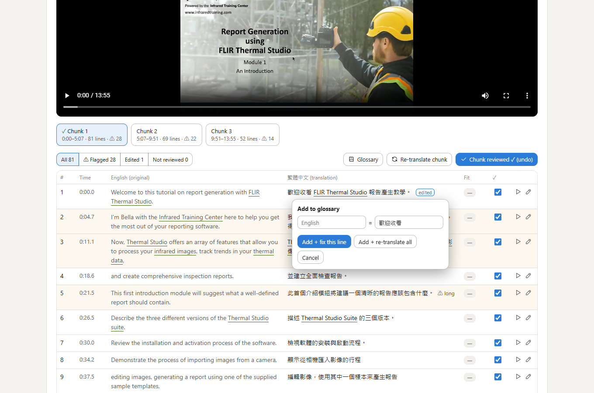
Right-click a selected word to add it to the glossary.
The Glossary button lists all terms, where each came from and how often it is used.
You can search, edit and delete terms. Export .txt and Import .txt let colleagues share one list.
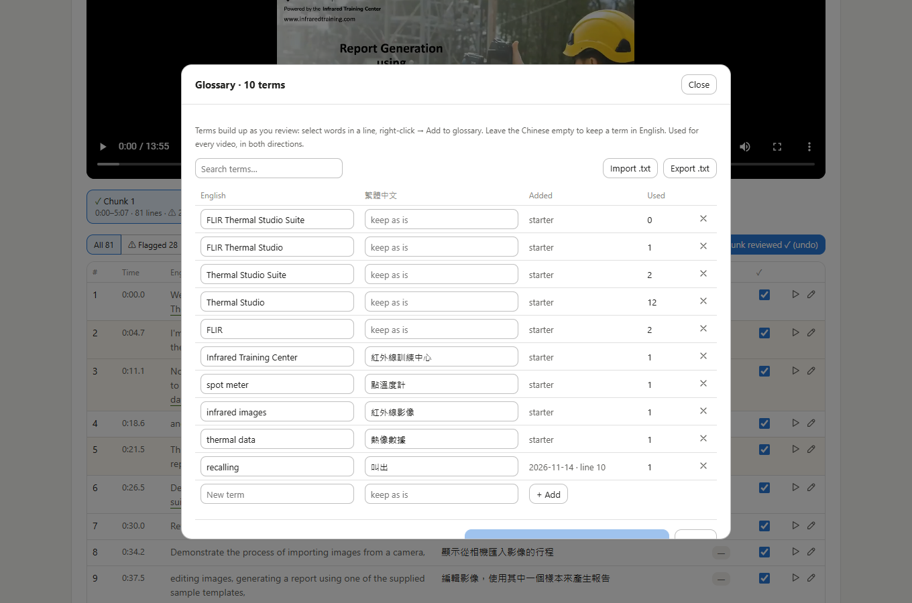
The glossary window.
9Step 4 · Voice
Makes the new voice track and puts it into the video.
Check the Voice: zm_009 (Chinese, male) or af_bella (English, female) by default; other voices are in the list.
Leave Voice reads = Translation, Fit to timing = Speed up + use gaps, Max speed-up = 1.25×.
Original audio = Replace — new voice only (default). The video's old sound is removed and only the
new voice remains, so you never hear two voices at once. Background music is removed too.
Click Generate voice. The time meter shows progress; Lines fit shows how many lines fit their time slot.
Open the Play & highlight tab and watch the result.
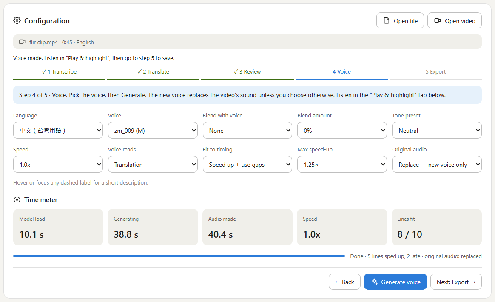
Step 4 when finished: 8 of 10 lines fit; the 2 late lines are marked in the review table.Play & highlight: the video with its new voice, and the text highlighted as it is spoken.
If some lines run late, go back to step 3, filter ⚠ Flagged, shorten the lines marked late,
and generate the voice again. Raising Max speed-up to 1.4× is a quicker fix but sounds hurried.
10Step 5 · Export
Tick the files you need and click Save selected, or Save on one row.
Files are named after the video and go to your Downloads folder.
File
Example name
Use it for
Video with new voice (MP4)
video.zh-TW.mp4
The finished dubbed video
Voice only (WAV)
video.zh-TW.wav
Editing in another video program
New subtitles, re-timed to the voice
video.zh-TW.srt
Subtitles for the dubbed video
Original subtitles
video.en.srt
Subtitles for the original video
Bilingual subtitles
video.en+zh-TW.srt
Both languages on each line, for checking or training
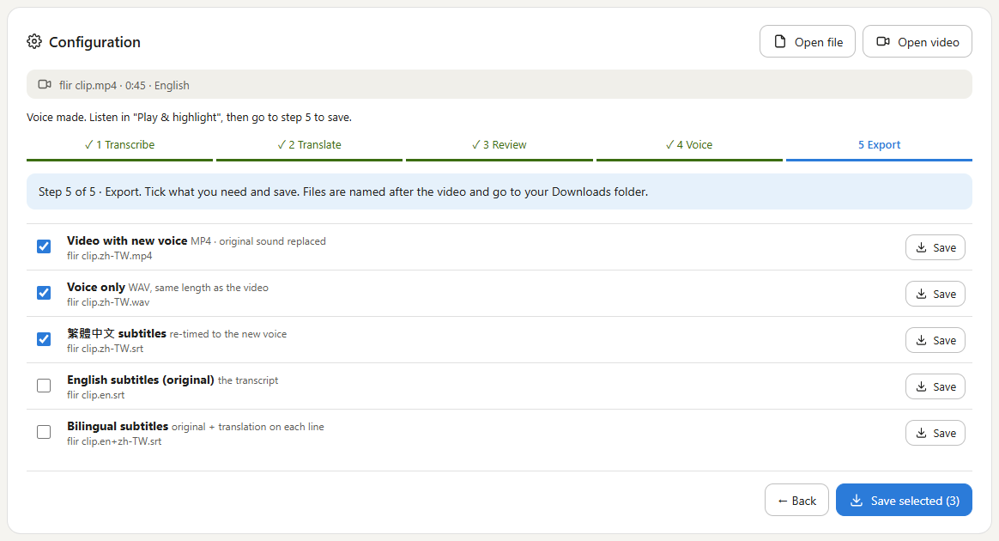
Step 5: the three most-used files are ticked for you.
11A video that already has subtitles
If you already have a good .srt for the video, skip transcription:
Click Open file and choose the .srt. The app starts at step 2.
Click Open video and choose the matching video (needed for steps 3–5).
Continue with steps 2 to 5 as usual.
12How long things take
Measured on an ETINSTW laptop (Intel Core Ultra 7, no graphics card needed):
Work
14-minute video
1-hour video (estimate)
Step 1 Transcribe (Best)
about 6 min
about 25–30 min
Step 2 Translate
under 10 s
under 1 min
Step 4 Chinese voice
about 11 min
about 1 hour
Step 4 English voice
about 8 min
about 40 min
The first voice after starting the app adds 30–80 seconds while the voice model loads.
Review time depends on you: plan roughly 10–20 minutes per 5-minute chunk the first time; less as your glossary grows.
Tip for long videos: start transcription, then review each chunk as it becomes ready.
Generate the voice at the end of the day or over lunch.
13Where files are kept
What
Where
Files you save in step 5 or text mode
Your Downloads folder
Work in progress, the glossary, a log file
%LOCALAPPDATA%\KokoroReader
The program and this manual
%LOCALAPPDATA%\Programs\Kokoro Reader
Uninstalling (Windows Settings → Apps → Kokoro Reader → Uninstall) removes the program
and the work folder, including your glossary. Click Glossary → Export .txt first if you want to keep it.
Installing a newer version over the old one keeps your work and glossary.
14Troubleshooting
Problem
What to do
Windows blocks the installer
More info → Run anyway (section 1).
Nothing seems to happen after Start transcribing or Generate
The first load can take up to a minute. Watch the progress text.
The page says the app has stopped
Open Kokoro Reader from the Start menu again and click Continue: ….
Step 5 is empty after reopening the app
The voice is not kept after quitting. Go to step 4 and click Generate voice again; your edits are kept.
The voice runs late on some lines
Shorten those lines in step 3, or raise Max speed-up in step 4.
Product names are translated wrongly
Add them to the glossary once (section 8).
A Chinese word is pronounced oddly
A known limit of the Chinese voice. Rephrase the line, or write a brand name in English.
The wrong language was detected
Open the video again and set Spoken language yourself in step 1.
Anything else
Send the file %LOCALAPPDATA%\KokoroReader\kokoro-reader.log to the person who gave you the installer.
15One-page checklist
Dub a video
Open video
Step 1: Auto · About 5 min · Best → Start transcribing
Step 2: Automatic
Step 3: per chunk → ⚠ Flagged first → edit → ✓ → Mark chunk reviewed
Wrong term? Select → right-click → Add to glossary